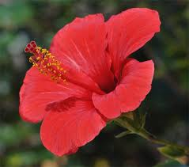
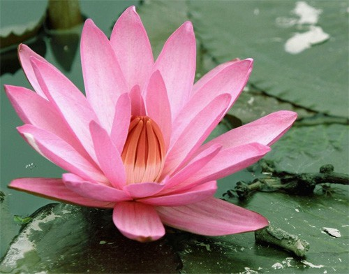

India, the land with many landscapes; here,
you’ll find the green mountains as well as the blue seas and the yellow sandy deserts so the
flower variety of this country ranges from one state to another due to the soil quality.
Whenever we think about sending someone flowers, it’s always the usual
Roses or Orchids which are great gifting options for sure but, there are flowers that
grow in India and used for different purposes from time to time. As interesting as it sounds, here is a whole list of them.
| Photo | Description | Link in infoormation |
|---|---|---|
| A rose is a woody perennial flowering plant of the genus Rosa, in the family Rosaceae, or the flower it bears. There are over three hundred species and tens of thousands of cultivars. |
Rose | |
|  | Hibiscus is a genus of flowering plants in the mallow family, Malvaceae. The genus is quite large, comprising several hundred species that are native to warm temperate, subtropical and tropical regions throughout the world. . |
Hibiscus |
|  | Lotus, a latinization of Greek lōtos , is a genus that includes most bird's-foot trefoils (also known as bacon-and-eggs and deervetches and contains many dozens of species distributed worldwide. Depending on the taxonomic authority, roughly between 70 and 150 are accepted |
Lotus |
| Nymphaeaceae /ˌnɪmfiːˈeɪsiː/ is a family of flowering plants, commonly called water lilies. They live as rhizomatous aquatic herbs in temperate and tropical climates around the world. The family contains five genera with about 70 known species Water lilies are rooted in soil in bodies of water, with leaves and flowers floating on or emergent from the surface. | .
Water Lily |